一座只属于你、不断生长的私人图书馆。漫画、文本与 PDF 统一阅读；每一句划线都能贴上摘抄墙、被检索、被回访、被一键带走。覆盖 Web 与 Android。
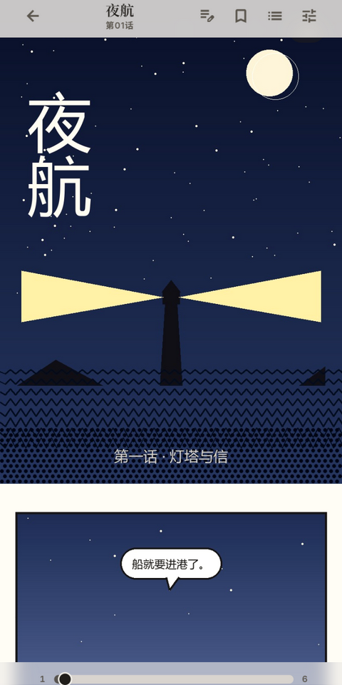
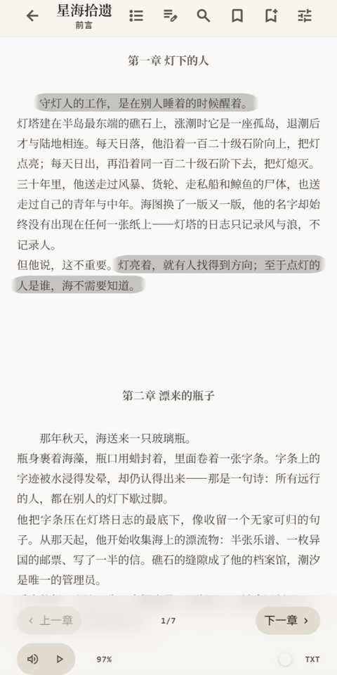
读的时候是一座馆，读完后还是一个手记采集器官。从导入到回望，覆盖阅读与沉淀的完整链路。
漫画 ZIP/CBZ/RAR/CBR、文本 TXT/Markdown/EPUB 与 PDF 统一导入；Markdown 支持数学公式、代码高亮与 Mermaid 图表。
条漫/页漫自由切换、双页布局与纸张质感；文本提供滚动、分页、仿真书、多栏四种模式，支持竖排书写与 8 种中文字体。
划线/批注分离，水彩笔、下划线、波浪线三种笔触；批注带稳定锚点，重排换字号也不漂移；漫画与 PDF 支持页级手记与文字级划线。
书内全文检索一键定位；跨书摘抄墙聚合全部手记，按关键词、书籍、标签、形态四维过滤，点击直达原句。
门厅「回望席」在周年与当日呼出旧日手记；单书与整墙一键导出 Markdown，无缝嫁接 Obsidian / Notion。
WebDAV、NAS、FTP 浏览下载，OPDS 目录支持 Calibre / Komga / Kavita——连接自己的存储，随时随地取书。
子书库分类、标签与收藏；文件夹批量导入自动建库，一话一文件自动合并为一书多章，导入期章节自动识别。
阅读进度、批注、书签与统计经 WebDAV 多端同步，逐条 LWW 合并；删除墓碑机制让本机删除不被远端副本复活。
系统语音、神经语音与自建服务端三路引擎可切换；倍速与悬浮控制，从当前位置起播，章末自动续播下一章。
15 周日历热力图记录你的阅读年轮；每日目标与连续达标天数，统计纳入云同步与备份，换机不失忆。
九宫格手势密码锁，SHA-256 加盐存储、失败锁定与自动锁定超时；所有数据留在本地，隐私完全由你掌控。
Material Design 3 设计体系，全 CSS 动画系统带来丝滑的页面过渡与交互反馈。
截图来自真实应用会话——从导入《夜航》《星海拾遗》等演示书籍，到划线、批注、摘抄墙与回望席的完整流程。
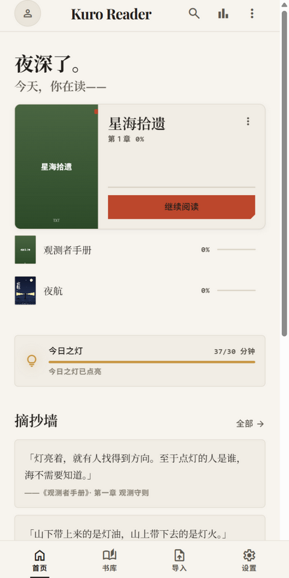
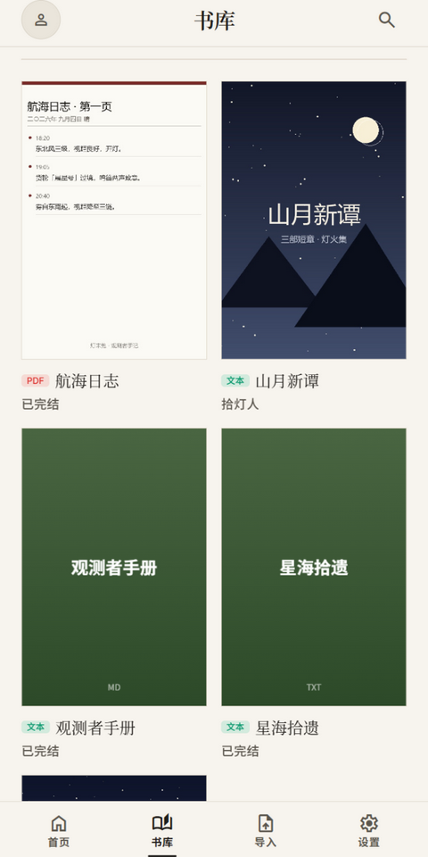
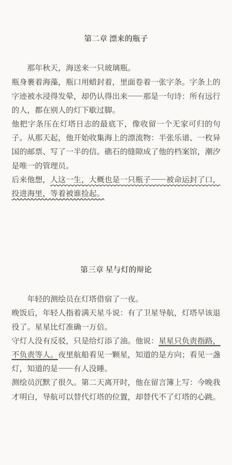
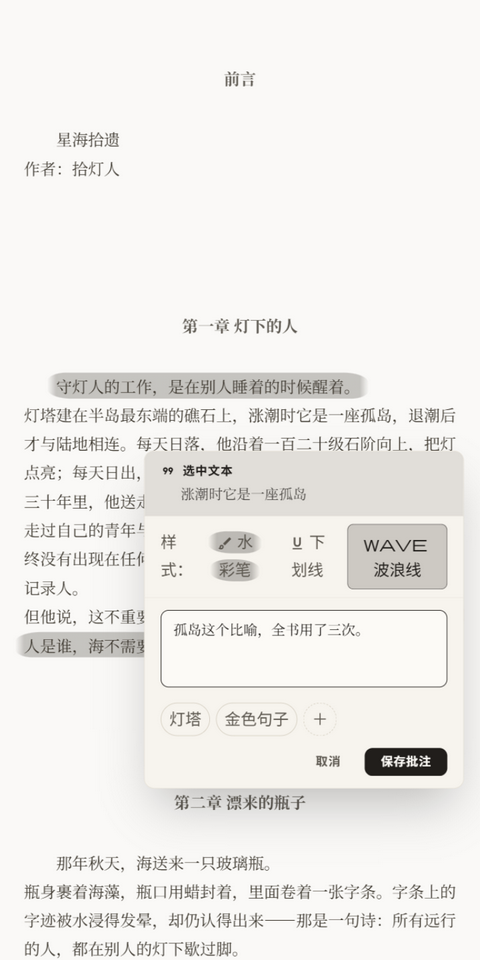
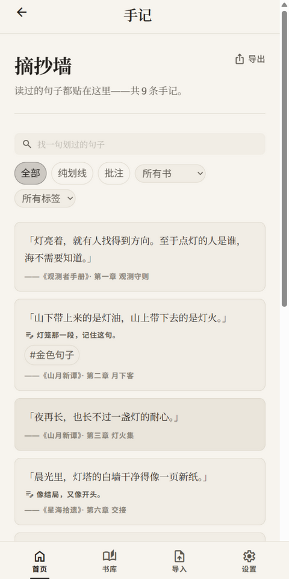
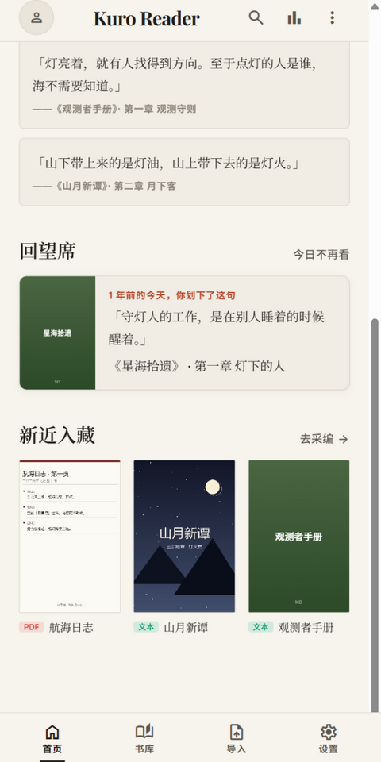
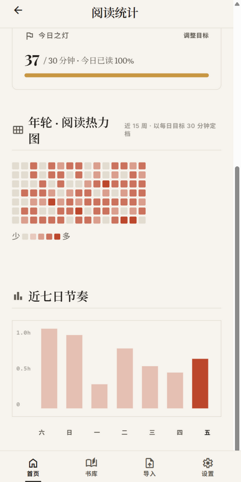
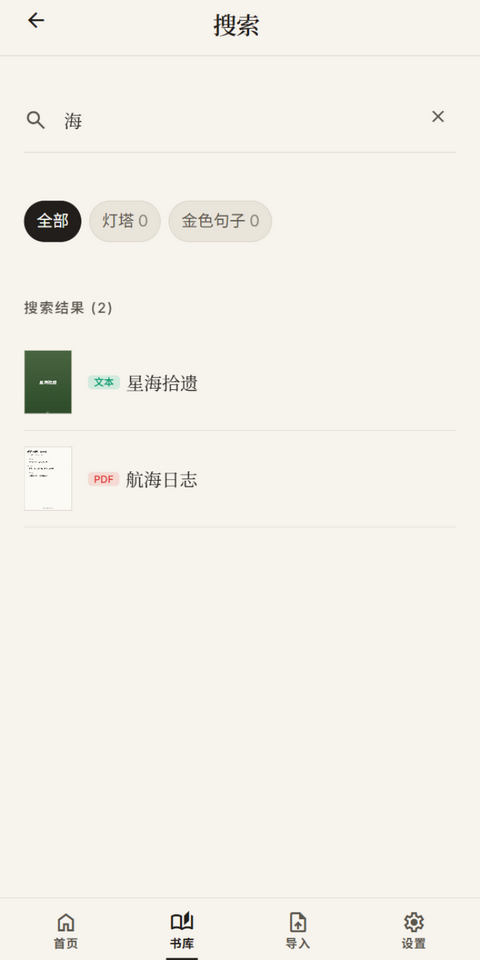
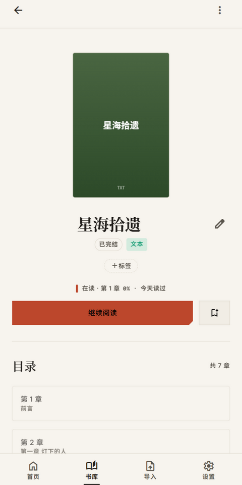
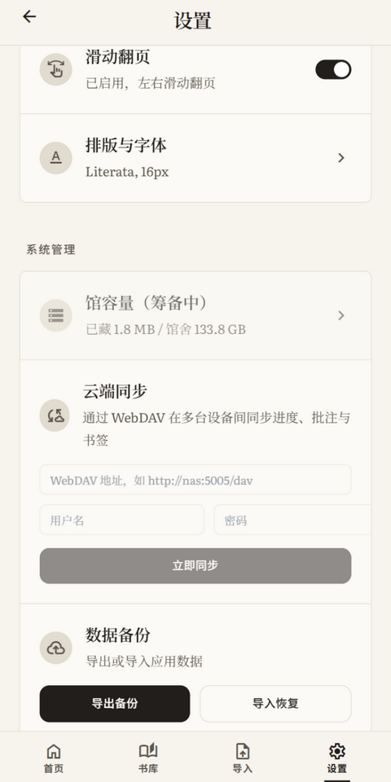
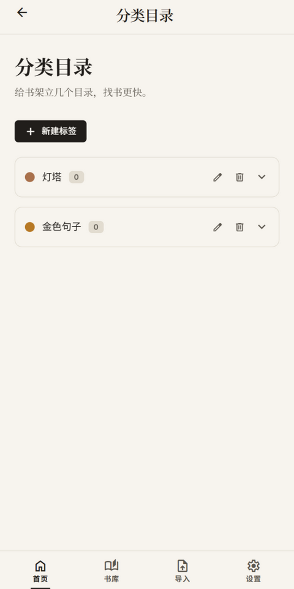
无论你是普通用户还是开发者，都可以快速上手。
直接点击上方「下载 APK」按钮，或前往 GitHub Releases 页面获取最新版本。
Android 系统会提示安全警告，前往 设置 → 安全 → 允许安装未知来源应用，对你使用的浏览器或文件管理器授权。
点击 APK 文件进行安装，完成后打开 Kuro Reader 即可开始使用。
通过应用内的导入功能，选择本地 ZIP/CBZ/RAR/CBR 漫画、TXT/Markdown/EPUB 文本或 PDF 文档；也可连接 WebDAV / FTP / OPDS 云端来源浏览并批量导入。
确保已安装 Git，克隆项目到本地。
需要 Node.js 18+，在项目根目录执行：
启动本地开发服务器，支持热更新：
编译优化后的生产版本，输出到 dist/ 目录：
需要 Java 17+ 和 Android Studio。先同步 Web 资源，再编译 APK：
构建产物位于 android/app/build/outputs/apk/release/app-release.apk，可传输到手机安装。
基于业界领先的前端技术栈，保证性能、可维护性与开发体验。